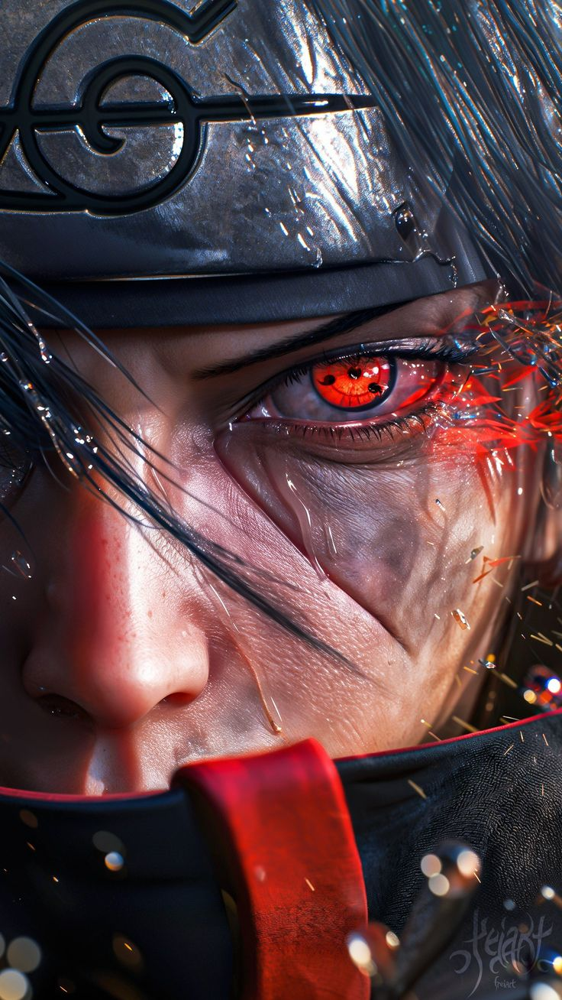

Itachi Uchiha is a fictional character from the Naruto series, known for his complex personality and tragic backstory. He was a prodigy of the Uchiha clan and served as an Anbu Captain before becoming an international criminal. Itachi's actions, including the massacre of his clan, were motivated by his desire to prevent a coup d'état and protect his brother, Sasuke. Despite being branded a villain, Itachi's true intentions were to safeguard his village and family, making him a nuanced character with deep philosophical insights. His legacy continues to influence the Naruto universe, and he is celebrated for his character development and moral ambiguity.
From a young age, Itachi was calm and insightful, showing noticeable maturity for his age and knowledge on how to deal with every situation. For all his accomplishments, talent, and fame, Itachi was a rather humble man. Never arrogant about his own abilities nor underestimating others, most things he said would be unbiased and accurate. If an opponent exceeded his expectations or posed a legitimate challenge to him or his allies, Itachi would freely admit it.
Itachi Uchiha from Naruto is an exceptionally powerful shinobi known for his mastery of genjutsu, intelligence, and elite combat skills. His Sharingan allows him to predict movements, copy techniques, and trap opponents in illusions, while his Mangekyō Sharingan grants him devastating abilities like Tsukuyomi, which distorts time in a mental illusion, and Amaterasu, black flames that burn anything they touch. He can also summon Susanoo, a powerful spiritual warrior equipped with the Yata Mirror for defense and the Totsuka Blade that seals enemies permanently. Beyond his visual powers, Itachi excels in fire-style jutsu, uses crows for deception and genjutsu, and is known for his incredible speed and strategic thinking, often defeating opponents before the fight truly begins, though his abilities are limited by his illness and the strain caused by using his Mangekyō Sharingan.

Itachi Uchiha from Naruto carried out several critical missions throughout his life, both as a Hidden Leaf shinobi and later as a member of the Akatsuki. As a young ANBU captain, his most significant mission was the tragic Uchiha clan massacre, ordered to prevent a civil war and protect the village, a task he completed while secretly sparing his brother, Sasuke Uchiha. After joining the Akatsuki as a double agent, his missions included tracking and capturing tailed beasts, though he often avoided unnecessary killing and subtly delayed operations to protect the Hidden Leaf. He also participated in key operations like confronting Naruto Uzumaki and Kakashi Hatake, where he demonstrated his overwhelming genjutsu abilities without fully harming them. One of his most important hidden missions was monitoring dangerous figures like Obito Uchiha from within the Akatsuki. Ultimately, even in death, Itachi completed a final “mission” by implanting safeguards in Sasuke to protect him and the village, proving his loyalty and long-term planning extended far beyond his lifetime.
Itachi Uchiha joining the Akatsuki is one of the most important and tragic moments in Naruto. After being ordered by the Hidden Leaf Village to carry out the massacre of the Uchiha clan to prevent a coup, Itachi chose to shoulder the burden alone, sparing only his younger brother, Sasuke Uchiha. To protect the village from the shadows and keep an eye on dangerous threats, he then joined the Akatsuki as a double agent. While the world saw him as a rogue ninja and criminal, Itachi secretly worked to safeguard the village by monitoring the organization’s activities, especially those of powerful members like Obito Uchiha. His decision to join the Akatsuki highlights his self-sacrifice, as he accepted hatred and isolation to maintain peace and ensure his brother’s future, making him one of the most complex and morally driven characters in the series.